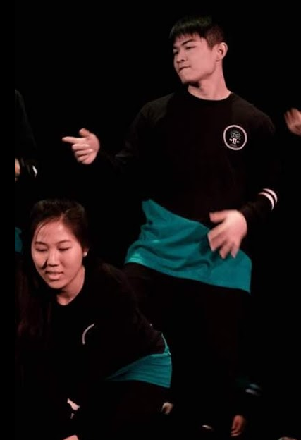

Pugs
I love animals, especially dogs and cats, and especially PUGS!
The slideshow on the left was created using Javascript and parsing JSON data from the Pug subreddit of Reddit.
Also, click here to check out Pug Nation Rescue of LA, an amazing organization dedicated to the rescue, care, and placement of abandoned, neglected, unwanted, displaced, and abused pugs.
Dance
I've been fortunate enough to have many opportunities at UCLA to dance. I've been a part of three Foundations Choreography Dance teams, as well as Vietnamese Traditional Dance.
Click here to see one of my team's performances!
